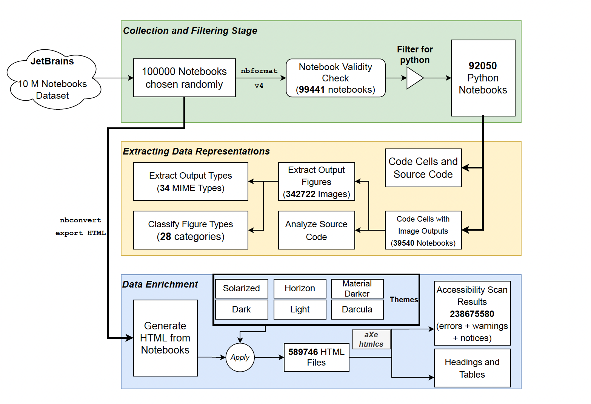
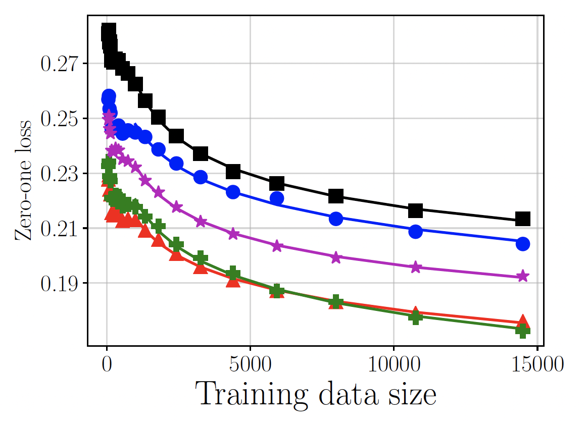
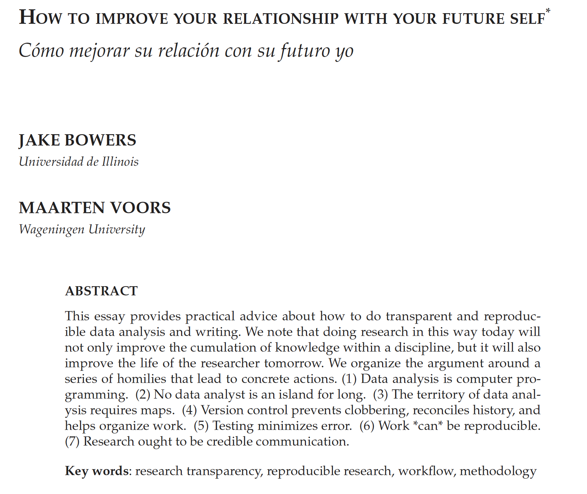
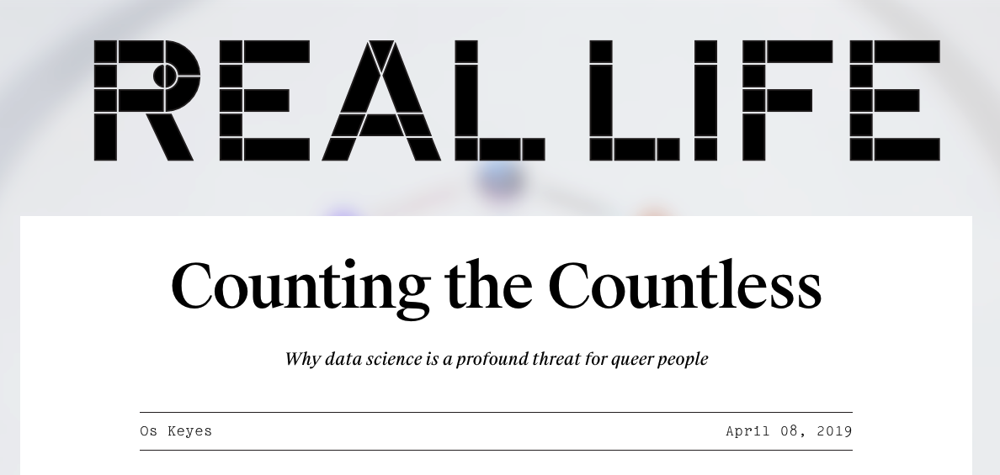
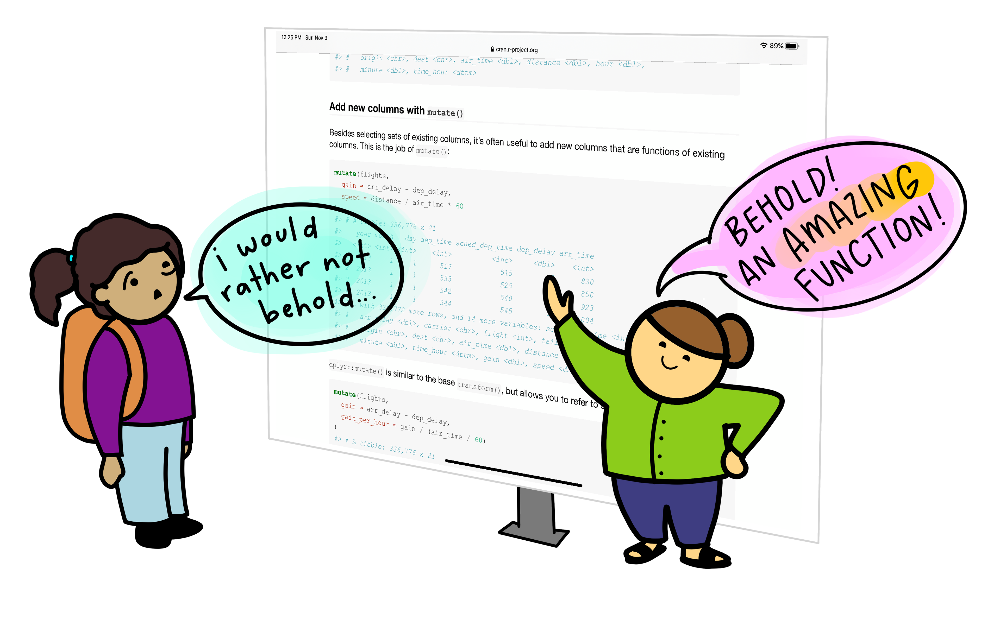
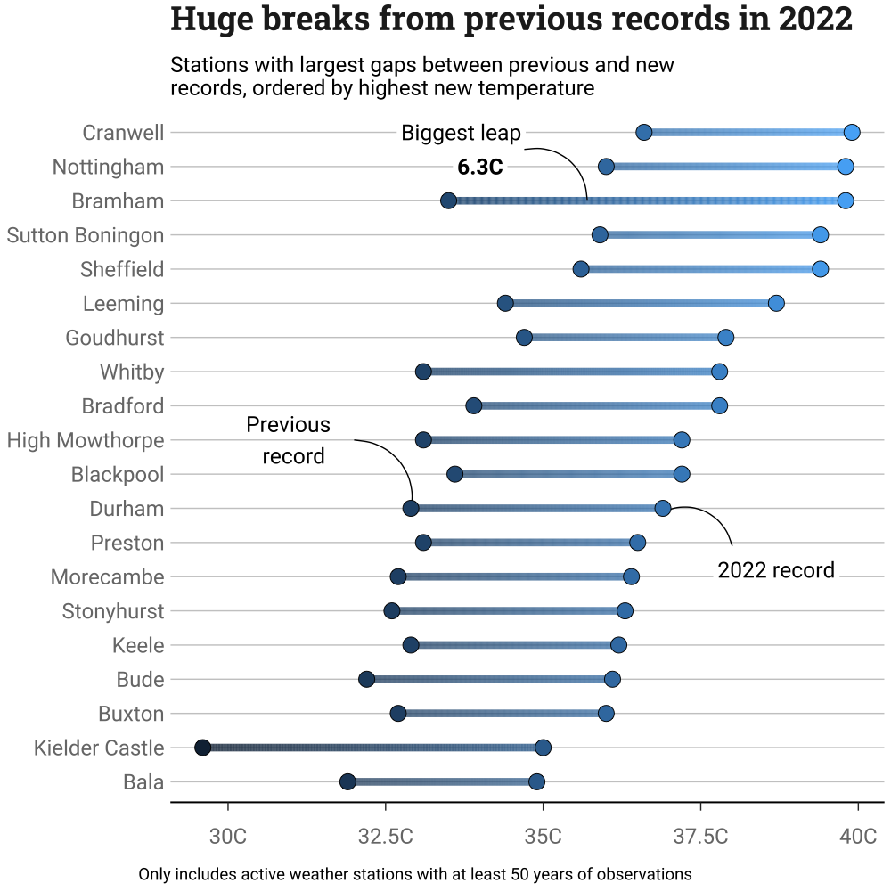

Zak Varty
Research
Teaching
Talks
Writing
Blog
Order By
Default
Date - Oldest
Date - Newest
Title
Date
Title
Reading Time
2023-11-09
Method of Moments Estimation for Randomised Response Surveys
7 min

2023-10-03
Notably Inaccessible
2 min
2023-09-13
Bib but Better
9 min

2023-08-17
Why is My Classifier Discrimanatory?
4 min

2023-08-15
How to Improve Your Relationship with Your Future Self
3 min
2023-08-08
Overcoming Barriers to Sharing Code
1 min
2023-07-26
The Mundanity of Excellence
2 min

2023-07-14
Counting the Countless
2 min

2023-01-19
Packaging your R code
23 min
2023-01-06
Data Wrangling
18 min
2022-12-14
Aquiring Data via an API
14 min
2022-12-13
Git: putting your new feature out into the world.
2 min
2022-12-01
Web Scraping with
{rvest}
12 min
2022-10-19
Good Enough Practices in Scientific Computing
5 min

2022-10-15
Data Journalism: Recreating a Professional Plot
6 min
2022-10-12
Tidy Tuesday: Ravelry Yarn
5 min
2022-10-10
Recommended Statistics Books
5 min
2022-10-07
Writing a rhetorical précis
5 min
2022-09-26
Setting up a quarto blog
4 min
2022-09-26
Hello, World!
1 min
No matching items